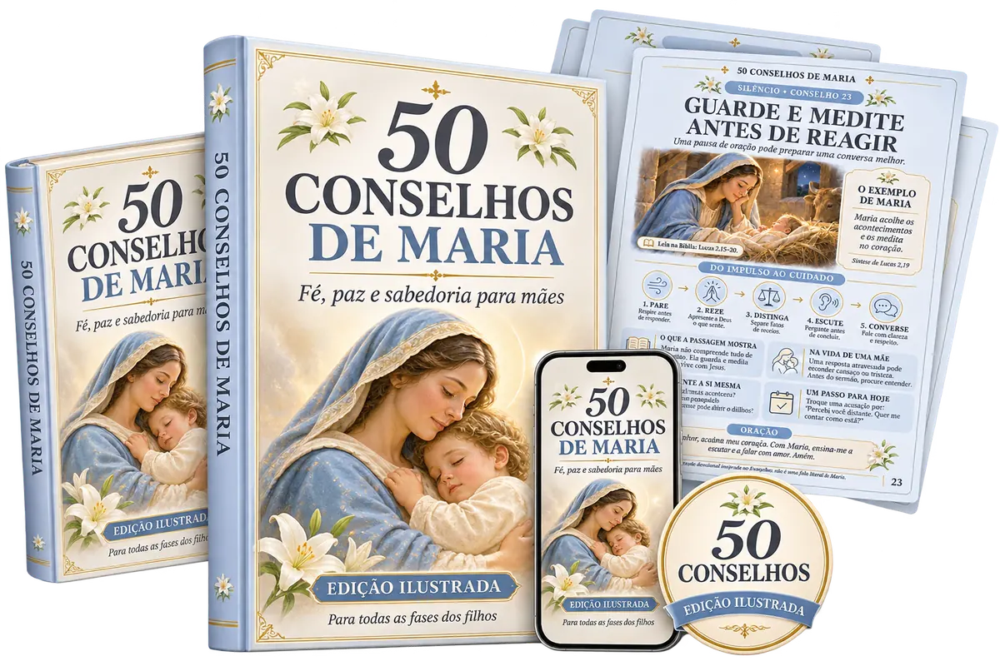
As atitudes de Nossa Senhora nos Evangelhos transformadas em mapas visuais simples, para você consultar em poucos minutos sempre que o coração de mãe apertar.
QUERO ACESSAR OS 50 CONSELHOS →Sabedoria de mãe para todas as fases dos filhos
Quando a preocupação aperta, é fácil reagir com cobrança, sermão ou desespero. Ou ficar calada e carregar tudo sozinha. Nesses momentos, você não precisa de mais um conselho genérico. Precisa de um exemplo claro de quem já passou por isso: uma mãe que também não controlava o caminho do Filho, e mesmo assim nunca deixou de estar ao lado d'Ele.
Cada conselho transforma uma passagem da vida de Maria em uma sequência simples de leitura, reflexão e aplicação prática.
Entenda em uma frase o que Maria ensina para aquela situação.
Veja em qual passagem dos Evangelhos o conselho está fundamentado.
Responda a perguntas que ajudam você a enxergar seu filho e a situação com mais calma.
Leve o conselho para a conversa, a oração ou a atitude que você precisa tomar hoje.
Os mapas não substituem a leitura bíblica. Eles ajudam você a encontrar, compreender e viver o exemplo de Maria quando enfrenta uma situação real com seus filhos. Compare Lucas 2 com o Conselho 23.
Arraste a linha para os lados e compare
Em Lucas 2, a frase "Maria guardava todas estas coisas, meditando-as em seu coração" aparece no versículo 19, no meio dos 52 versículos do capítulo. No mapa, o exemplo é destacado, explicado e acompanhado de perguntas práticas para você refletir antes de falar com seu filho.
Texto bíblico de Lucas 2 em tradução livre, fiel ao original.
SÃO LUCAS2O NASCIMENTO DE JESUS
2Naqueles dias, saiu um decreto de César Augusto ordenando o recenseamento de toda a terra. 2Este primeiro recenseamento foi feito quando Quirino era governador da Síria. 3Todos iam registrar-se, cada um na sua cidade. 4Também José subiu da Galileia, da cidade de Nazaré, à Judeia, à cidade de Davi chamada Belém, porque era da casa e da família de Davi, 5para registrar-se com Maria, sua esposa, que estava grávida. 6Enquanto estavam ali, completaram-se os dias para o parto, 7e ela deu à luz o seu filho primogênito; envolveu-o em faixas e deitou-o numa manjedoura, porque não havia lugar para eles na hospedaria.
8Naquela região havia pastores que passavam a noite nos campos, guardando o rebanho. 9Um anjo do Senhor apareceu-lhes, e a glória do Senhor os envolveu de luz; e eles ficaram com muito medo. 10O anjo, porém, disse-lhes: "Não tenham medo! Eu lhes anuncio uma grande alegria, que será para todo o povo: 11hoje, na cidade de Davi, nasceu para vocês um Salvador, que é o Cristo Senhor. 12Este será o sinal: encontrarão um recém-nascido envolto em faixas e deitado numa manjedoura." 13De repente, juntou-se ao anjo uma multidão do exército celeste, que louvava a Deus, dizendo: 14"Glória a Deus no mais alto dos céus, e paz na terra aos homens que Ele ama."
15Quando os anjos se afastaram deles para o céu, os pastores disseram uns aos outros: "Vamos até Belém ver o que aconteceu, o que o Senhor nos deu a conhecer." 16Foram depressa e encontraram Maria, José e o recém-nascido deitado na manjedoura. 17Ao vê-lo, contaram o que lhes fora dito a respeito do menino. 18Todos os que ouviam ficavam admirados com o que os pastores diziam. 19Maria, porém, guardava todas essas coisas, meditando-as em seu coração. 20Os pastores voltaram, glorificando e louvando a Deus por tudo o que tinham ouvido e visto, conforme lhes fora anunciado.
21Quando se completaram os oito dias para a circuncisão do menino, deram-lhe o nome de Jesus, como o anjo o chamara antes de ser concebido no seio materno.
Veja páginas reais do material, exatamente como serão liberadas para você.
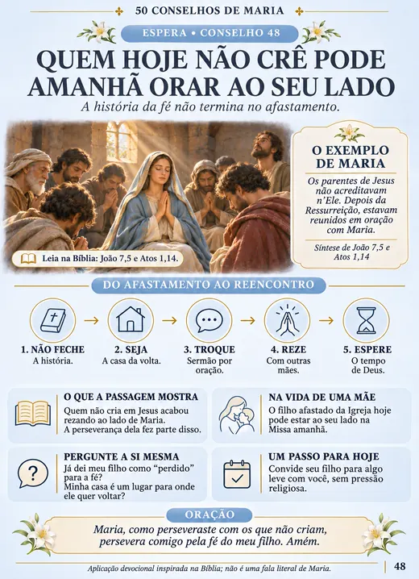
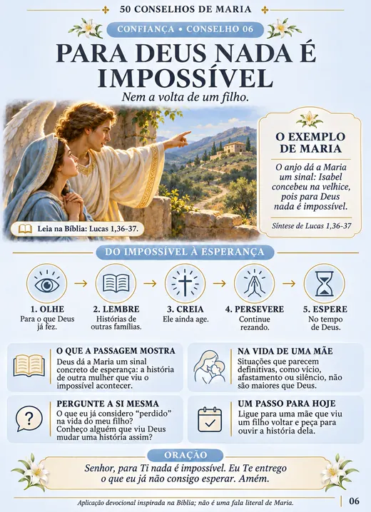
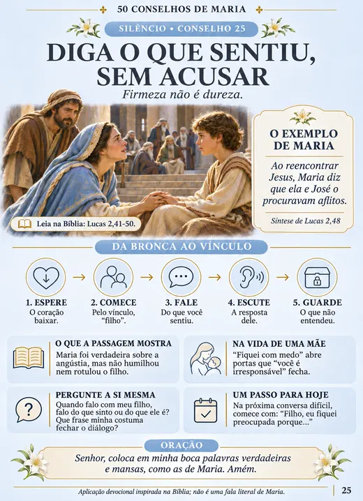
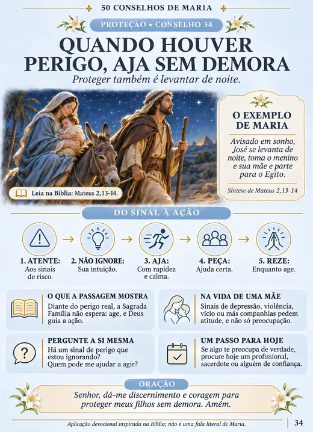
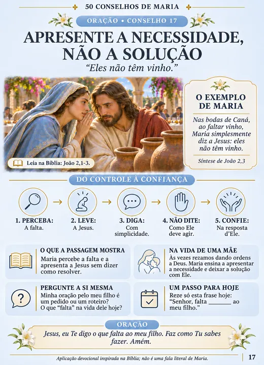
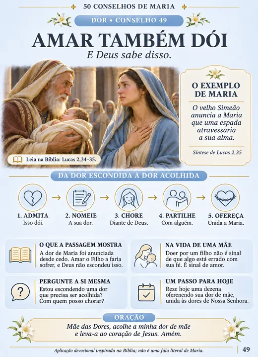
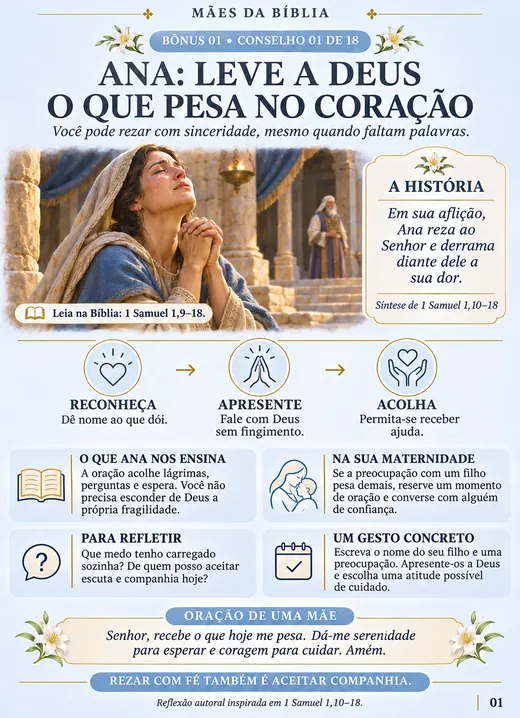
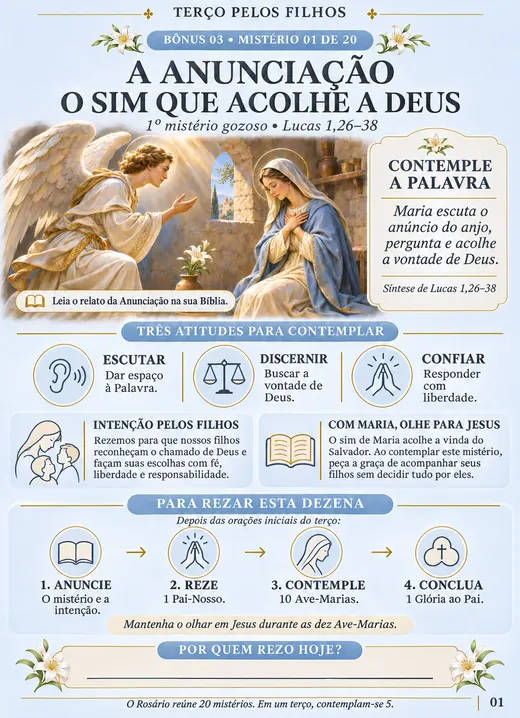
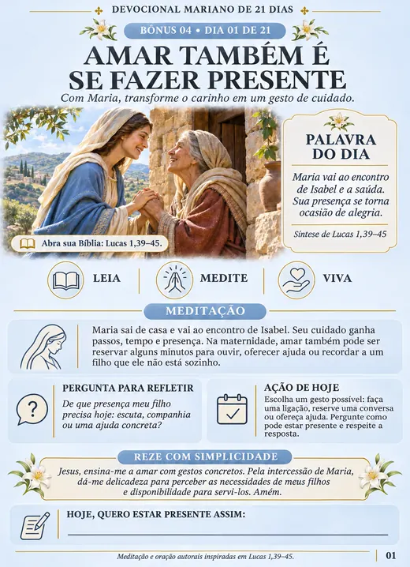
Estes são apenas 6 dos 50 mapas, mais uma página de cada bônus. Cada conselho parte de uma passagem bíblica e conduz você até uma aplicação prática.
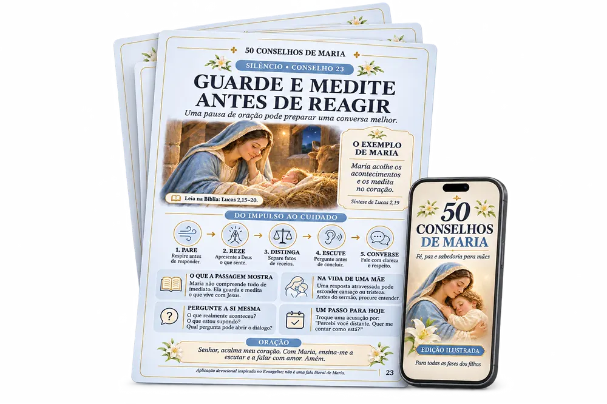
Encontre o conselho para o momento que seu filho está vivendosem precisar procurar passagens soltas na Bíblia
Entenda o exemplo de Maria com mais facilidadepor meio de uma explicação visual, direta e organizada
Reflita antes de falarcom perguntas que ajudam a separar o medo da atitude certa
Consulte por situaçãocom mapas sobre confiança, oração, silêncio, proteção, espera e dor
Leia onde for mais convenienteno celular, no tablet, no computador ou nas páginas impressas
Comece com apenas 2 minutoslendo um conselho por dia ou indo direto ao que você está vivendo
Você não precisa ler os 50 conselhos em sequência. Pode começar pela situação que está vivendo com seu filho agora e voltar ao material sempre que uma nova preocupação surgir.
Seu filho se afastou da Igreja? Consulte a categoria de espera. Uma conversa difícil pela frente? Vá aos mapas sobre silêncio e palavras. Medo do que pode acontecer? Abra os conselhos sobre proteção.
Use no celular, no tablet ou no computador. Se preferir, imprima as páginas em A4 e deixe os conselhos mais importantes perto do seu oratório.
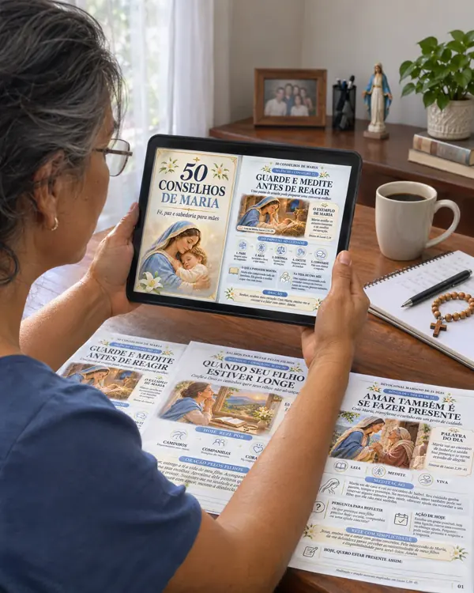
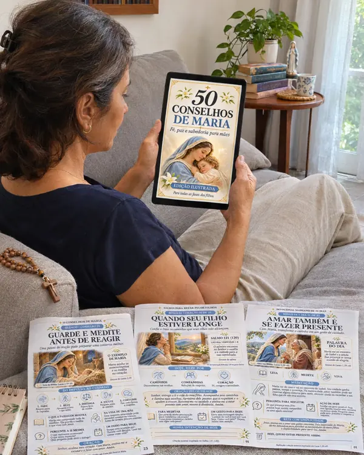
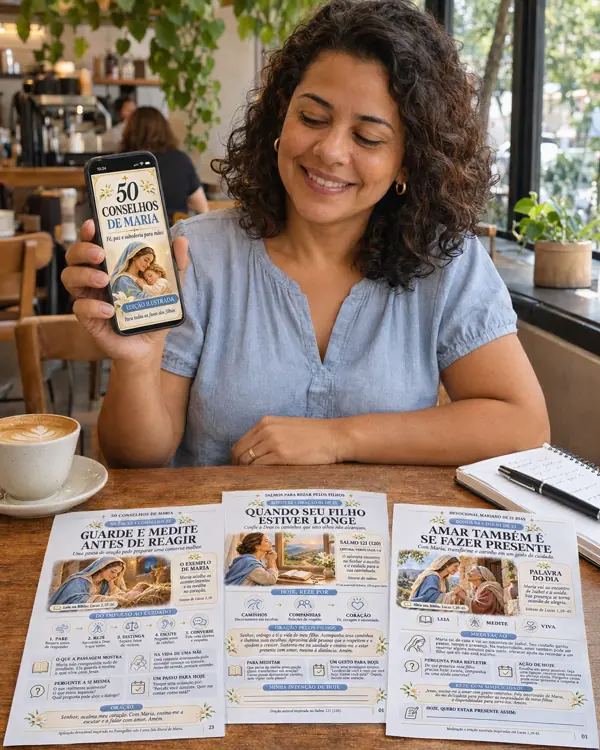
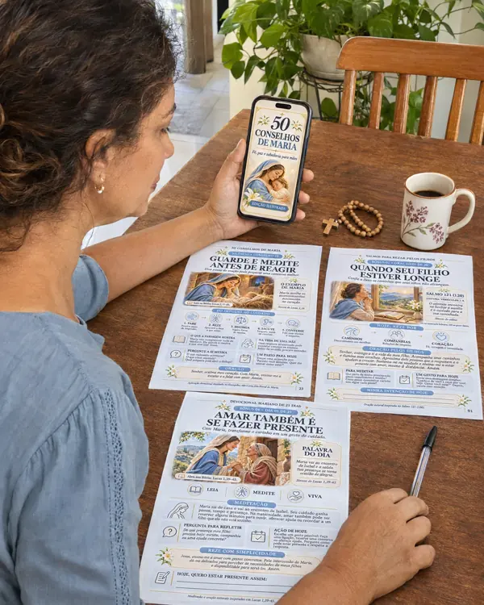
Sente medo das escolhas dos seus filhose quer transformar a preocupação em oração e atitudes mais serenas
Vê um filho se afastando da fé ou da Igrejae não sabe como falar sem afastá-lo ainda mais
Já não consegue controlar os caminhos delesseja um filho adolescente, adulto ou morando longe
Quer controlar melhor suas palavras e reaçõesespecialmente quando a preocupação vira cobrança
Deseja proteger sua família pela oraçãocolocando seus filhos sob o manto de Nossa Senhora
Quer deixar uma herança de fé para filhos e netosmesmo quando os resultados ainda não aparecem
18 conselhos de mulheres das Escrituras que lutaram, esperaram e oraram pelos filhos.
20 salmos com uma intenção e uma oração para cada fase da vida deles.
Os 20 mistérios do Rosário, cada um com a passagem bíblica e uma intenção pelos seus filhos.
Uma jornada diária com meditação, pergunta para reflexão, oração e uma ação prática.
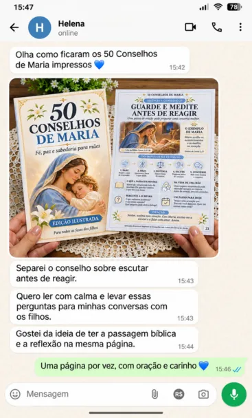
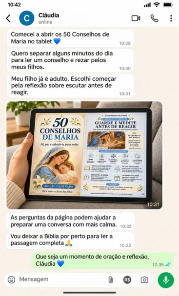
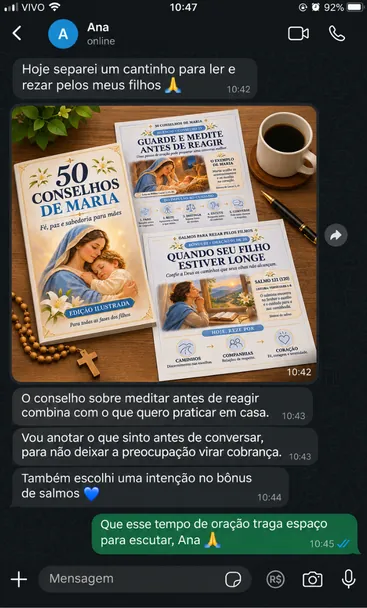
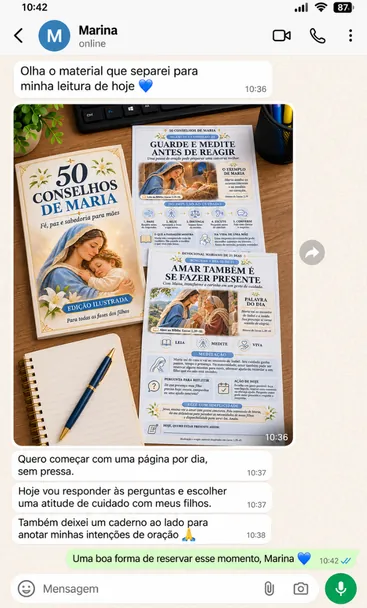
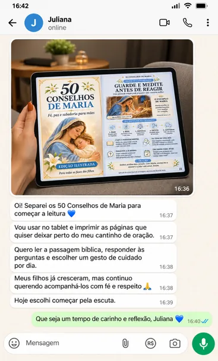
Conversas ilustrativas, criadas para mostrar formas de usar o material no dia a dia.
Item por item, com o valor que cada um teria separado
⏰ ÚLTIMA CHANCE: OFERTA TERMINA EM13:00:00
Um único pagamento. Sem mensalidade e sem assinatura.
Pacote Completo · 50 Conselhos de Maria
+ R$ 178 em bônus incluídos
50 Conselhos de Maria em Mapas VisuaisR$ 97
Bônus 01: Mães da BíbliaR$ 47
Bônus 02: Salmos para Rezar pelos FilhosR$ 47
Bônus 03: Terço pelos FilhosR$ 47
Bônus 04: Devocional Mariano de 21 DiasR$ 37
Acesso vitalício, com atualizações
✓ Pagamento único · acesso vitalício · atualizações incluídas
📲 Receba no WhatsApp e no seu e-mail
Sem mensalidade. Sem assinatura. Sem cobranças recorrentes.
Finalize o pagamento único por Pix ou cartão.
Após a confirmação, o acesso aos arquivos digitais é enviado automaticamente para os dois.
Consulte no celular, no tablet ou no computador, e imprima em A4 quando quiser.
Todo o pacote é liberado após a confirmação do pagamento e enviado diretamente para o seu WhatsApp e o seu e-mail.
Acesse os 50 Conselhos de Maria, explore os mapas e veja se o material faz sentido para você e para a sua família. Se, dentro de 30 dias, não ficar satisfeita por qualquer motivo, basta enviar um e-mail para solicitar a devolução de 100% do valor pago, sem burocracia.
A compra é processada em um ambiente criptografado e protegido. Seus dados pessoais e financeiros permanecem seguros.
Cada conselho traz a referência bíblica completa e segue o ensinamento da Igreja Católica sobre Nossa Senhora.
Assim que o pagamento for confirmado, você receberá o acesso no WhatsApp e no e-mail informados na compra. No Pix, a confirmação costuma ser imediata; no cartão, pode levar alguns minutos.
É um produto 100% digital, entregue em PDF. Você pode acessar pelo celular, tablet ou computador. Nenhum material físico será enviado pelos Correios.
Sim. As páginas foram diagramadas no formato A4 para que você possa imprimir em casa ou em uma gráfica.
Não. A Bíblia continua sendo a fonte e a oração continua sendo o centro. Os mapas são uma ferramenta de consulta e reflexão baseada nas passagens bíblicas sobre Maria, criada para ajudar você a viver o exemplo dela no dia a dia com seus filhos.
Sim. Os conselhos foram organizados por situações (confiança, oração, silêncio, proteção, espera e dor) e não por idade. Servem para quem tem filhos pequenos, adolescentes, adultos ou morando longe, e também para avós.
Sim. O formato visual pode ser usado em grupos de oração, encontros de mães, terços em família e pastorais.
Sim. Os quatro bônus são liberados com o material principal, sem cobrança adicional dentro desta oferta.
O pagamento é feito uma única vez. O acesso é vitalício e inclui as atualizações futuras disponibilizadas para este produto, sem mensalidade.
Acesso imediato · pagamento único · garantia de 30 dias